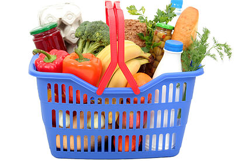
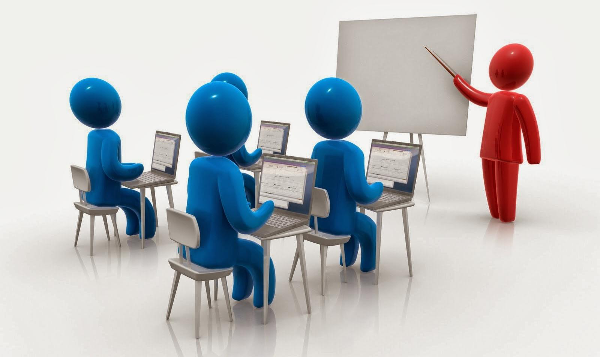
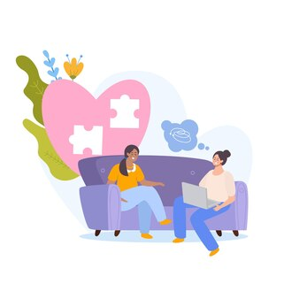
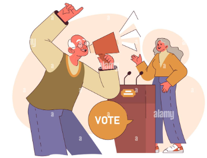
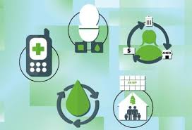
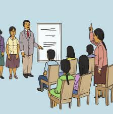

Qué Ofrecemos
Nuestra ONG se dedica a ofrecer apoyo y recursos para aquellos en situación de desigualdad y pobreza. Ofrecemos una variedad de servicios para apoyar a las personas en situación de pobreza y desigualdad..Nuestros programas incluyen:
- Asistencia alimentaria y de vivienda: Proporcionamos ayuda alimentaria y asistencia para garantizar que las personas tengan acceso a alimentos nutritivos y a un techo sobre sus cabezas. Trabajamos en colaboración con organizaciones locales para distribuir alimentos y ofrecer apoyo para encontrar vivienda asequible. 
- Atención médica y servicios de salud: Nos aseguramos de que todas las personas tengan acceso a atención médica de calidad, independientemente de su capacidad para pagarla. Organizamos clínicas de salud gratuitas y proporcionamos asistencia para acceder a medicamentos y tratamientos necesarios.
- Programas de educación y capacitación: Creemos en el poder transformador de la educación para romper el ciclo de la pobreza. Ofrecemos programas educativos y de capacitación laboral para ayudar a las personas a adquirir nuevas habilidades y aumentar sus oportunidades de empleo y progreso económico. 
- Apoyo psicosocial y emocional: Reconocemos que la pobreza y la desigualdad no solo afectan a las personas a nivel material, sino también emocional y psicológicamente. Por eso, ofrecemos servicios de apoyo psicosocial y emocional para ayudar a las personas a enfrentar los desafíos y superar las barreras que enfrentan. 
- Defensa de derechos y promoción de políticas públicas: Nos comprometemos a abogar por políticas públicas que aborden las causas subyacentes de la desigualdad y la pobreza en España. Trabajamos para sensibilizar y movilizar a la comunidad en la lucha por la justicia social y económica. 
- Microcréditos y financiamiento: Proporcionar acceso a microcréditos y financiamiento para emprendedores y pequeñas empresas en comunidades desfavorecidas, ayudándoles a iniciar o expandir sus negocios y generar ingresos sostenibles.
- Programas de inserción laboral: Ofrecer programas de inserción laboral que incluyan formación, orientación profesional y colocación laboral para personas desempleadas o en riesgo de exclusión social, facilitando su integración en el mercado laboral.
- Servicios legales y de asesoramiento: Brindar servicios legales gratuitos o a bajo costo, así como asesoramiento jurídico, para personas que enfrentan problemas legales relacionados con la vivienda, el empleo, la migración u otros aspectos de su vida.
- Acceso a servicios básicos: Facilitar el acceso a servicios básicos como agua potable, electricidad, transporte público y telecomunicaciones en comunidades marginadas o rurales que carecen de estos servicios esenciales. 
- Promoción de la igualdad de género: Desarrollar programas y campañas de sensibilización que promuevan la igualdad de género y empoderen a mujeres y niñas, proporcionando recursos y apoyo para superar las barreras que enfrentan en la educación, el empleo y la participación política.
- Promoción de la inclusión social: Organizar actividades y eventos comunitarios que fomenten la integración y la cohesión social, promoviendo la participación y el diálogo entre diferentes grupos étnicos, culturales y socioeconómicos.
- Investigación y incidencia política: Realizar investigaciones y análisis sobre las causas y consecuencias de la desigualdad y la pobreza en España, y abogar por políticas públicas más inclusivas y equitativas a nivel local, regional y nacional. 